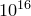

By default, when numbers are displayed, they are printed accurate to eight significant figures, although fewer figures may actually be displayed if the final digits are zeros or nines.
This is generally a helpful convention: PyXPlot’s internal arithmetic is generally accurate to around 16 significant figures, and so it is quite conceivable that a calculation which is supposed to return, say , may in fact return 0.999 999 999 999 999 9. Likewise, when complex arithmetic is enabled, routines which are expected to return real numbers may in fact return results with imaginary parts at the level of one part in . By displaying numbers to only eight significant figures in such cases, the user is usually shown the ‘right’ answer, instead of a noisy and unattractive one.
However, there may also be cases where more accuracy is desirable, in which case, the number of significant figures to which output is displayed can be set using the command
n = 12 set numerics sigfig n
where n can be any number in the range 1-30. It should be noted that the number supplied is the minimum number of significant figures to which numbers are displayed; on occasion an extra figure may be displayed.
Alternatively, the string substitution operator, described in Section 6.1.1 may be used to specify how a number should be displayed on a one-by-one basis, as in the examples:
pyxplot> print "%d" %(pi) # Print the integer part of pi
3
pyxplot> print "%.5f"%(pi) # Print pi in non-scientific format, to 5 d.p.
3.14159
pyxplot> print "%.5e"%(pi) # Print pi in scientific format, to 5 d.p.
3.14159e+00
pyxplot> print "%s" %(pi) # Print pi as normal
3.1415927